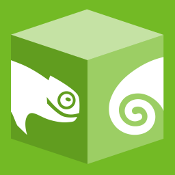
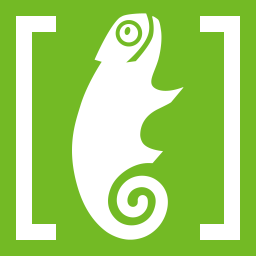

How to use
Link from CDN
<link href="https://static.opensuse.org/chameleon/dist/css/chameleon.css" rel="stylesheet"/>If your application already provides jQuery (MediaWiki, WordPress, etc.):
<script src="https://static.opensuse.org/chameleon/dist/js/chameleon-no-jquery.js"></script>Otherwise:
<script src="https://static.opensuse.org/chameleon/dist/js/chameleon.js"></script>Install from NPM
npm install --save opensuse-theme-chameleonImport styles to SaSS
@import '~opensuse-theme-chameleon/src/sass/chameleon';Import JavaScript to Browserify/Webpack
require('opensuse-theme-chameleon'); // CommonJSimport 'opensuse-theme-chameleon'; // ES6Design language
Based on openSUSE Brand Guidelines.
Here is a design system for openSUSE under development. We are looking forward to adopt it into Chameleon.
Usability & accessibility
Our wiki pages, documents, news articles, forum discussions should have nice print result. So they can be used for offline educational activities.
Mobile
Most of our web pages should be mobile friendly. In case users' PC have trouble or are unavailable, they can use mobile devices to search information.
openSUSE has been ported to many different hardware, like Raspberry PI. These devices may have a small touch screen.
Components
Chameleon is based on Bootstrap 4.3, providing all components from Bootstrap.
Buttons
Bootstrap provided several color variants of buttons. We don't recommend you to use all of them. Instead, you should use as less variants as possible.
Only the following color variants are recommended:
Inputs
Text, search, email, password inputs have the same appearance. They are just single element components.
Selects, checkboxs, radio buttons and file inputs should use custom control.
Dark mode switch
Alerts
You can only use four alert variants: info, success, warning, danger
Cards
Card title
Some quick example text to build on the card title and make up the bulk of the card's content.
Go somewhereCard title
Some quick example text to build on the card title and make up the bulk of the card's content.
Go somewhereCard title
Some quick example text to build on the card title and make up the bulk of the card's content.
Go somewhereList Group
Please don't use contextual classes.
- Cras justo odio
- Dapibus ac facilisis in
- Morbi leo risus
- Porta ac consectetur ac
- Vestibulum at eros
Modals
Graphics
Based on openSUSE artwork.
Application icons
| 16px | 32px | 64px | Website | Description |
|---|---|---|---|---|
| www.opensuse.org | Home page icon | |||
|  | software.opensuse.org | Software search engine icon | ||
|  | en.opensuse.org | Wiki icon | ||
| forums.opensuse.org | Forum icon | |||
| build.opensuse.org | OBS icon |
Examples
We made some examples of how to use Chameleon theme in web applications.